Logic and Proof
15 Functions
In the late nineteenth century, developments in a number of branches of mathematics pushed towards a uniform treatment of sets, functions, and relations. We have already considered sets and relations. In this chapter, we consider functions and their properties.
A function,  , is ordinary understood as a mapping from a domain
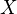 to another domain
, is ordinary understood as a mapping from a domain
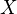 to another domain  . In set-theoretic foundations, and
are arbitrary sets. We have seen that in a type-based system like
Lean, it is natural to distinguish between types and subsets of a
type. In other words, we can consider a type
. In set-theoretic foundations, and
are arbitrary sets. We have seen that in a type-based system like
Lean, it is natural to distinguish between types and subsets of a
type. In other words, we can consider a type X of elements, and a
set A of elements of that type. Thus, in the type-theoretic
formulation, it is natural to consider functions between types X and
Y, and consider their behavior with respect to subsets of X and
Y.
In everyday mathematics, however, set-theoretic language is common, and most mathematicians think of a function as a map between sets. When discussing functions from a mathematical standpoint, therefore, we will also adopt this language, and later switch to the type-theoretic representation when we talk about formalization in Lean.
15.1 The Function Concept
If and are any sets, we write to express the
fact that is a function from to . This means that
assigns a value  in to every element
in to every element  of . The set
is called the domain of , and the set is called the
codomain. (Some authors use the word "range" for the codomain, but
today it is more common to use the word "range" for what we call the
image of
of . The set
is called the domain of , and the set is called the
codomain. (Some authors use the word "range" for the codomain, but
today it is more common to use the word "range" for what we call the
image of  below. We will avoid the ambiguity by avoiding the word
range altogether.)
below. We will avoid the ambiguity by avoiding the word
range altogether.)
The simplest way to define a function is to give its value at every
with an explicit expression. For example, we can write any of the
following:
- Let
 be the function defined by .
be the function defined by . - Let be the function defined by .
- Let
 be the function defined by .
be the function defined by . - Let be the function defined by
The ability to define functions using an explicit expression raises the foundational question as to what counts as legitimate "expression." For the moment, let us set that question aside, and simply note that modern mathematics is comfortable with all kinds of exotic definitions. For example, we can define a function by This is at odds with a view of functions as objects that are computable in some sense. It is not at all clear what it means to be presented with a real number as input, let alone whether it is possible to determine, algorithmically, whether such a number is rational or not. We will return to discuss such issues in a later chapter.
Notice that the choice of the variables and 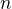 in the definitions
above are arbitrary. They are bound variables in that the functions
being defined do not depend on or . The values remain the same
under renaming, just as the truth values of "for every , 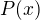"
and "for every  , " are the same. Given an expression
that depends on the variable , logicians often use the notation
to denote the function that maps to . This is
called "lambda notation," for the obvious reason, and it is often
quite handy. Instead of saying "let be the function defined by
, " are the same. Given an expression
that depends on the variable , logicians often use the notation
to denote the function that maps to . This is
called "lambda notation," for the obvious reason, and it is often
quite handy. Instead of saying "let be the function defined by
 ," we can say "let ." This is not
common mathematical notation, and it is best to avoid it
unless you are talking to logicians or computer scientists. We will
see, however, that lambda notation is built in to Lean.
," we can say "let ." This is not
common mathematical notation, and it is best to avoid it
unless you are talking to logicians or computer scientists. We will
see, however, that lambda notation is built in to Lean.
For any set , we can define a function by the equation
 . This function is called the identity function. More
interestingly, let and
. This function is called the identity function. More
interestingly, let and  . We can define a
new function by . The function
. We can define a
new function by . The function  is
called the composition of and
is
called the composition of and  or composed with and
it is written . The order is somewhat confusing; you just
have to keep in mind that to evaluate the expression you
first evaluate on input , and then evaluate .
or composed with and
it is written . The order is somewhat confusing; you just
have to keep in mind that to evaluate the expression you
first evaluate on input , and then evaluate .
We think of two functions as being equal, or the same
function, when for they have the same values on every input; in other
words, for every in ,  . For example, if
are defined by and
. For example, if
are defined by and  ,
then . Notice that the statement that two functions are equal
is a universal statement (that is, for the form "for every , …").
,
then . Notice that the statement that two functions are equal
is a universal statement (that is, for the form "for every , …").
Proposition. For every , and  .
.
Proof. Let be any element of . Then , and .
Suppose and  satisfy
satisfy  . Remember that this means that for every in
. In that case, is said to be a left inverse to , and
is said to be a right inverse to . Here are some examples:
. Remember that this means that for every in
. In that case, is said to be a left inverse to , and
is said to be a right inverse to . Here are some examples:
- Define by and . Then is both a left and a right inverse to , and vice-versa.
- Write
 to denote the nonnegative reals. Define
by , and define by . Then for every in the domain of , so is a left
inverse to , and is a right inverse to . On the other
hand, , which is not the same as
when is negative. So is not a left inverse to , and
is not a right inverse to .
to denote the nonnegative reals. Define
by , and define by . Then for every in the domain of , so is a left
inverse to , and is a right inverse to . On the other
hand, , which is not the same as
when is negative. So is not a left inverse to , and
is not a right inverse to .
The following fact is not at all obvious, even though the proof is short:
Proposition. Suppose has a left inverse,
, and a right inverse . Then .
Proof. Let be any element in . The idea is to compute
in two different ways. Since is a left inverse to ,
we have . On the other hand, since is a right
inverse to , , and so . So .
If is both a right and left inverse to , we say that is
simply the inverse of . A function may have more than one left
or right inverse (we leave it to you to cook up examples), but it can
have at most one inverse.
Proposition. Suppose are both inverses to
. Then .
Proof. The follows from the previous proposition, since (say)
is a left inverse to , and is a right inverse.
When has an inverse, , this justifies calling the inverse
to , and writing to denote . Notice that if is
an inverse to , then is an inverse to . So if has
an inverse, then so does , and . For any
set , clearly we have .
Proposition. Suppose and . If is a
left inverse to and is a left inverse to , then
is a left inverse to .
Proof. For every in ,
Corollary. The previous proposition holds with "left" replaced by "right".
Proof. Switch the role of with and with in the
previous proposition.
Corollary. If and both have inverses,
then .
15.2 Injective, Surjective, and Bijective Functions
A function is said to be injective, or an injection,
or one-one, if given any  and
and  in , if , then
in , if , then
 . Notice that the conclusion is equivalent to its
contrapositive: if , then . So is
injective if it maps distinct element of to distinct elements of
.
. Notice that the conclusion is equivalent to its
contrapositive: if , then . So is
injective if it maps distinct element of to distinct elements of
.
A function is said to be surjective, or a
surjection, or onto, if for every element of , there is an
in such that  . In other words, is surjective if
every element in the codomain is the value of at some element in
the domain.
. In other words, is surjective if
every element in the codomain is the value of at some element in
the domain.
A function is said to be bijective, or a bijection,
or a one-to-one correspondence, if it is both injective and
surjective. Intuitively, if there is a bijection between and ,
then and have the same size, since makes each element of
correspond to exactly one element of and vice-versa. For
example, it makes sense to interpret the statement that there were four
Beatles as the statement that there is a bijection between the set
and the set .
If we claimed that there were five Beatles, as evidenced by the
function which assigns 1 to John, 2 to Paul, 3 to George, 4 to
Ringo, and 5 to John, you should object that we double-counted John
— that is, is not injective. If we claimed there were only three
Beatles, as evidenced by the function which assigns 1 to John, 2
to Paul, and 3 to George, you should object that we left out poor
Ringo — that is, is not surjective.
The next two propositions show that these notions can be cast in terms of the existence of inverses.
Proposition. Let .
- If has a left inverse, then is injective.
- If has a right inverse, then is surjective.
- If has an inverse, then it is bijective.
Proof. For the first claim, suppose has a left inverse , and
suppose . Then  , and so
, and so  .
.
For the second claim, suppose has a right inverse . Let be
any element of , and let . Then .
The third claim follows from the first two.
The following proposition is more interesting, because it requires us
to define new functions, given hypotheses on .
Proposition. Let .
- If is nonempty and is injective, then has a left
inverse.
- If is surjective, then has a right inverse.
- If if bijective, then it has an inverse.
Proof. For the first claim, let be any element of , and
suppose is injective. Define by setting equal
to any such that , if there is one, and
otherwise. Now, suppose . By the definition of ,
has to have the property that . Since is injective,
, so .
For the second claim, because is surjective, we know that for
every in there is any such that . Define by again setting equal to any such . (In contrast to
the previous paragraph, here we know that such an exists, but it
might not be unique.) Then, by the definition of , we have .
Notice that the definition of in the first part of the proof
requires the function to "decide" whether there is an in such
that . There is nothing mathematically dubious about this
definition, but if many situations, this cannot be done
algorithmically; in other words, might not be computable from
the data. More interestingly, the definition of in the second part
of the proof requires the function to "choose" a suitable value of
from among potentially many candidates. We will see later that this is
a version of the axiom of choice. In the early twentieth century,
the use of the axiom of choice in mathematics was hotly debated, but
today it is commonplace.
Using these equivalences and the results in the previous section, we can prove the following:
Proposition. Let 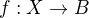 and .
- if and are injective, then so is .
- if and are surjective, then so is .
Proof. If and are injective, then they have left inverses
and , respectively, in which case is a left inverse
to . The second statement is proved similarly.
We can prove these two statements, however, without mentioning inverses at all. We leave that to you as an exercise.
Notice that the expression can be used to define
infinitely many functions with domain  , such as:
, such as:
- a function
- a function
- a function
Only the third one is surjective. Thus a specification of the function's codomain as well as the domain is essential to making sense of whether a function is surjective.
15.3 Functions and Subsets of the Domain
Suppose is a function from to . We may wish to reason about
the behavior of on some subset of . For example, we can say
that is injective on if for every and in , if
, then .
If is a function from to and is a subset of , we
write to denote the image of on , defined by
In words, is the set of elements of that are "hit" by
elements of under the mapping . Notice that there is an
implicit existential quantifier here, so that reasoning about images
invariables involves the corresponding rules.
Proposition. Suppose , and is a subset of
. Then for any in , is in .
Proof. By definition, is in if and only if there
is some in such that . But that holds for .
Proposition. Suppose and . Let be
a subset of . Then
Proof. Suppose  is in . Then for some
is in . Then for some  , . By the previous proposition,
is in . Again by the previous proposition, is
in .
, . By the previous proposition,
is in . Again by the previous proposition, is
in .
Conversely, suppose is in . Then there is a in
such that , and since is in  , there is an in
such that . But then , so is in .
, there is an in
such that . But then , so is in .
Notice that if is a function from to , then is
surjective if and only if . So the previous proposition is a
generalization of the fact that the composition of surjective
functions is surjective.
Suppose is a function from to , and is a subset of
. We can view as a function from to , by simply
ignoring the behavior of on elements outside of . Properly
speaking, this is another function, denoted and
called "the restriction of to ." In other words, given  and ,
and ,  is the
function defined by for every in
. Notice that now " is injective on " means simply that the
restriction of to is injective.
is the
function defined by for every in
. Notice that now " is injective on " means simply that the
restriction of to is injective.
There is another important operation on functions, known as the
preimage. If and , then the
preimage of  under , denoted , is defined by
that is, the set of elements of that get mapped into . Notice
that this makes sense even if does not have an inverse; for a
given in , there may be no
under , denoted , is defined by
that is, the set of elements of that get mapped into . Notice
that this makes sense even if does not have an inverse; for a
given in , there may be no  's with the property
's with the property  ,
or there may be many. If has an inverse, , then for every
in there is exactly one with the property , in which case, means the same thing whether you
interpret it as the image of under or the preimage of
under .
,
or there may be many. If has an inverse, , then for every
in there is exactly one with the property , in which case, means the same thing whether you
interpret it as the image of under or the preimage of
under .
Proposition. Suppose and . Let  be
a subset of
be
a subset of  . Then
. Then
Here we give a long list of facts properties of images and
preimages. Here, denotes an arbitrary function from to ,
 denote arbitrary subsets of , and 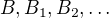 denote arbitrary subsets of .
denote arbitrary subsets of , and 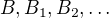 denote arbitrary subsets of .
- , and if is injective, .
- 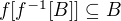, and if is surjective, .
- If , then .
- If , then .
- .
 .
.- , and if is
injective, .
- .
 .
.- .
- .
- 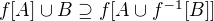.
- .
- .
Proving identities like this is typically a matter of unfolding definitions and using basic logical inferences. Here is an example.
Proposition. Let and be sets, ,  , and . Then .
, and . Then .
Proof. Suppose . Then , and for some , . But this means that is in , and so
 . Since , we have , as needed.
. Since , we have , as needed.
Conversely, suppose  . Then for some , we have . For this , have
. Then for some , we have . For this , have  and . Since , we have , and since , we also have , as required.
and . Since , we have , and since , we also have , as required.
15.4 Functions and Relations
A binary relation  on and is functional if for every
in there exists a unique in such that . If
is a functional relation, we can define a function by
setting to be equal to the unique in such that
. Conversely, it is not hard to see that if is
any function, the relation
on and is functional if for every
in there exists a unique in such that . If
is a functional relation, we can define a function by
setting to be equal to the unique in such that
. Conversely, it is not hard to see that if is
any function, the relation  defined by is a
functional relation. The relation is known as the graph
of .
defined by is a
functional relation. The relation is known as the graph
of .
It is not hard to check that functions and relations travel in pairs:
if is the function associated with a functional relation , then
is the functional relation associated the function , and
vice-versa. In set-theoretic foundations, a function is
often defined to be a functional relation. Conversely, we have seen
that in type-theoretic foundations like the one adopted by Lean,
relations are often defined to be certain types of functions. We will
discuss these matters later on, and in the meanwhile only remark that
in everyday mathematical practice, the foundational details are not so
important; what is important is simply that every function has a
graph, and that any functional relation can be used to define a
corresponding function.
So far, we have been focusing on functions that take a single
argument. We can also consider functions  or
that take multiple arguments. For example, the addition function on the integers takes two integers and returns an
integer. Remember, we can consider binary functions, ternary
functions, and so on, and the number of arguments to a function is
called its "arity." One easy way to make sense of functions with
multiple arguments is to think of them as unary functions from a
cartesian product. We can think of a function which takes two
arguments, one in and one in , and returns an argument in
as a unary function from
or
that take multiple arguments. For example, the addition function on the integers takes two integers and returns an
integer. Remember, we can consider binary functions, ternary
functions, and so on, and the number of arguments to a function is
called its "arity." One easy way to make sense of functions with
multiple arguments is to think of them as unary functions from a
cartesian product. We can think of a function which takes two
arguments, one in and one in , and returns an argument in
as a unary function from  to , whereby
abbreviates . We have seen that in dependent type theory
(and in Lean) it is more convenient to think of such a function as
a function which takes an element of and returns a function from
, so that abbreviates . Such a function
maps to , where is the set of functions
from to .
to , whereby
abbreviates . We have seen that in dependent type theory
(and in Lean) it is more convenient to think of such a function as
a function which takes an element of and returns a function from
, so that abbreviates . Such a function
maps to , where is the set of functions
from to .
We will return to these different ways of modeling functions of higher arity later on, when we consider set-theoretic and type-theoretic foundations. One again, we remark that in ordinary mathematics, the foundational details to not matter much. The two choices above are inter-translatable, and sanction the same principles for reasoning about functions informally.
In mathematics, we often also consider the notion of a partial
function from to , which is really a function from some subset
of to . The fact that is a partial function from to
is sometimes written , which should be
interpreted as saying that 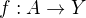 for some subset of
. Intuitively, we think of as a function from which
is simply "undefined" at some of its inputs; for example, we can think
of defined by  ,
which is undefined at , so that in reality . The set is sometimes called the
domain of , in which case, there is no good name for ;
others continue to call the domain, and refer to as the
domain of definition. To indicate that a function is
defined at , that is, that is in the domain of definition of
, we sometimes write . If and are two
partial functions from to , we write to mean
that either and are both defined at and have the same
value, or are both undefined at . Notions of injectivity,
surjectivity, and composition are extended to partial functions,
generally as you would expect them to be.
,
which is undefined at , so that in reality . The set is sometimes called the
domain of , in which case, there is no good name for ;
others continue to call the domain, and refer to as the
domain of definition. To indicate that a function is
defined at , that is, that is in the domain of definition of
, we sometimes write . If and are two
partial functions from to , we write to mean
that either and are both defined at and have the same
value, or are both undefined at . Notions of injectivity,
surjectivity, and composition are extended to partial functions,
generally as you would expect them to be.
In terms of relations, a partial function corresponds to a
relation such that for every there is at most one
such that holds. Mathematicians also sometimes consider
multifunctions from to , which correspond to relations
such that for every in , there is at least
one such that holds. There may be many such ; you
can think of these as functions which have more than one input
value. If you think about it for a moment, you will see that a
partial multifunction is essentially nothing more than an arbitrary
relation.
15.5 Exercises
- Let be any function from to , and let be any
function from to .
- Show that if is injective, then is injective.
- Give an example of functions and as above, such that that
is injective, but is not injective.
- Show that if is injective and is surjective, then
is injective.
- Show that if is injective, then
- Let and be as in the last problem. Suppose is
surjective.
- Is necessarily surjective? Either prove that it is, or give a
counterexample.
- Is necessarily surjective? Either prove that it is, or give a
counterexample.
- Is
- A function from
 to is said to be strictly
increasing if whenever , .
to is said to be strictly
increasing if whenever , .
- Show that if is strictly increasing, then it is injective (and hence it has a left inverse).
- Show that if is strictly increasing, and is
a right inverse to , then is strictly increasing.
- Let be any function, and let and be subsets
of . Show that 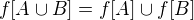.
- Let
 be any function, and let and be any
subsets of . Show .
be any function, and let and be any
subsets of . Show . - Define notions of composition and inverse for binary relations that generalize the notions for functions.